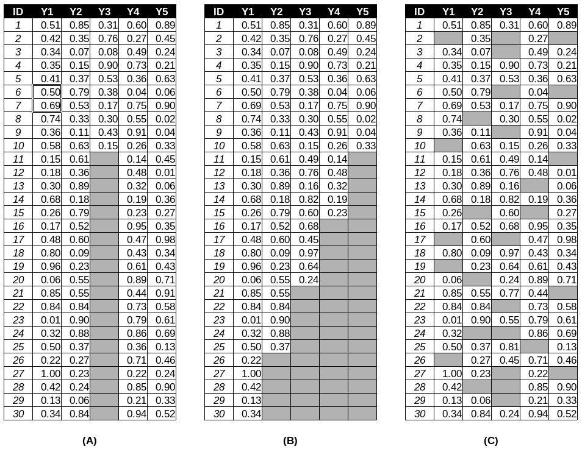
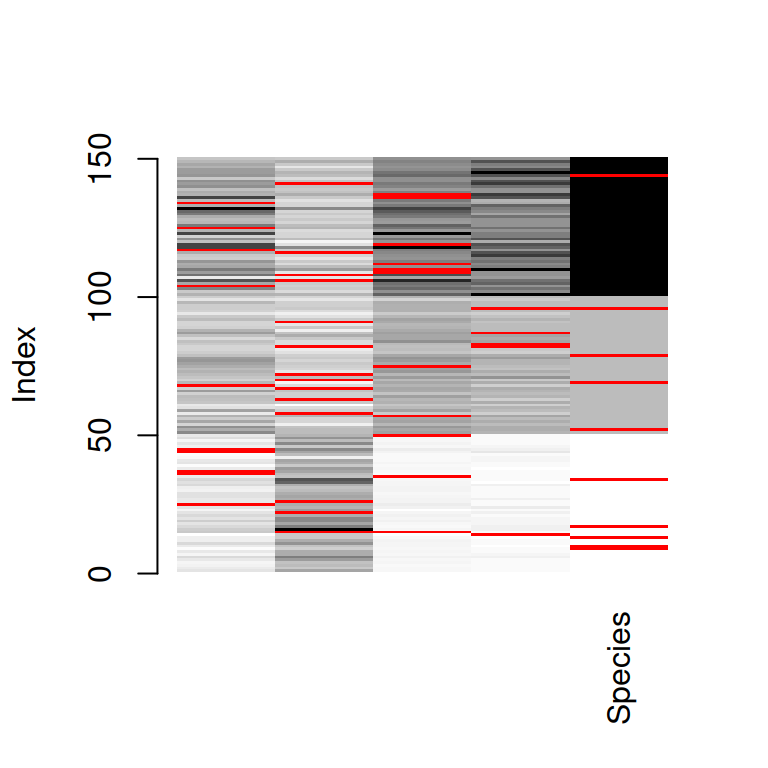
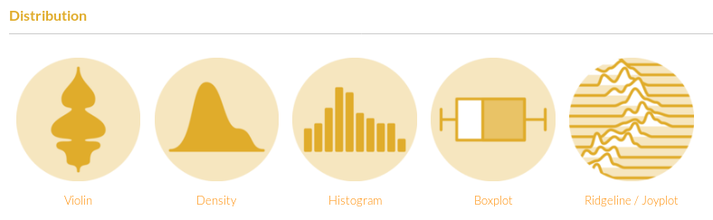
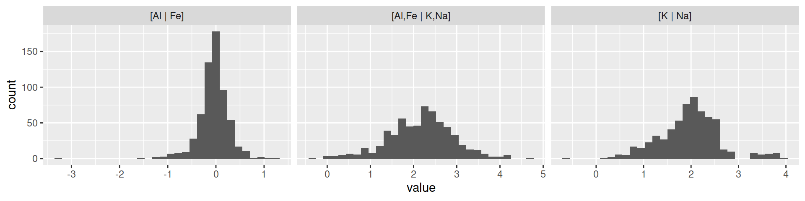
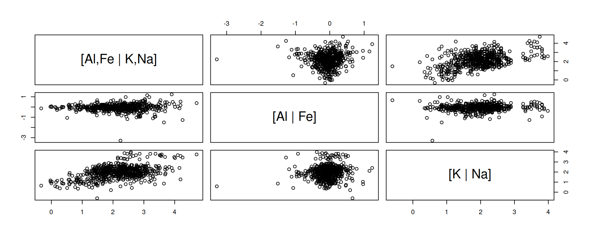
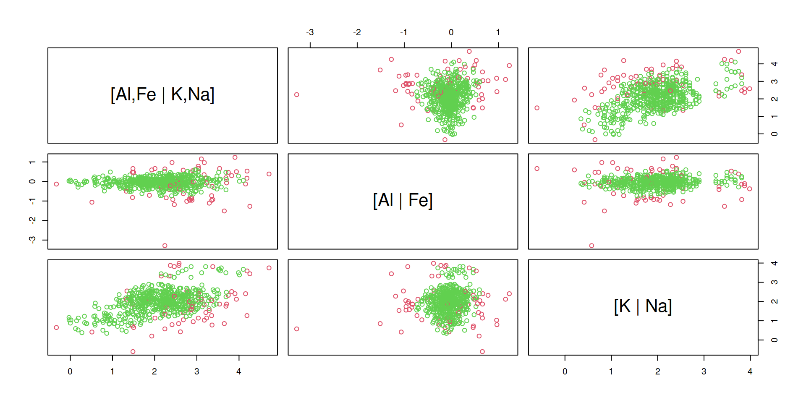

Sepal.Length Sepal.Width Petal.Length Petal.Width Species
1 5.1 NA 1.5 0.4 setosa
2 4.8 3.0 1.4 0.1 <NA>
3 5.7 3.0 4.2 NA <NA>
4 6.4 NA 5.3 2.3 virginica
5 6.0 2.9 4.5 1.5 <NA>
6 5.6 NA 4.5 1.5 versicolor
7 NA 2.7 4.1 1.0 versicolor
8 NA 3.4 1.9 0.2 setosaDétection de valeurs aberrantes et imputation de données manquantes
Charles Frenette-Vallières
2024-03-11
Objectifs spécifiques
À la fin de ce chapitre, vous
- saurez comment procéder à l’imputation de valeurs manquantes en mode univarié et multivarié
- saurez comment détecter des valeurs aberrantes en mode univarié et multivarié
Données manquantes
Donnée:
- perdue lors de la collecte ou du processus d’enregistrement des données,
- non mesurée en raison du dysfonctionnement d’un équipement,
- écartée en raison d’une contamination,
- oubliée
- non étudiée
Données manquantes
Données manquantes: biais
Données manquantes: biais
Portrait des données manquantes: proportions
# A tibble: 4 × 5
Species Sepal.Length Sepal.Width Petal.Length Petal.Width
<fct> <dbl> <dbl> <dbl> <dbl>
1 setosa 0.111 0.0667 0.0667 0.0222
2 versicolor 0.0217 0.152 0.0435 0.0652
3 virginica 0.0816 0.0816 0.122 0
4 <NA> 0 0 0 0.1 Portrait des données manquantes: types de données manquantes
(A) non-réponse univariée (B) non-réponse multivariée
Portrait des données manquantes: diagrammes (1/)
Portrait des données manquantes: diagrammes (2/)
plot(VIM::aggr(iris_NA))Mécanismes des données manquantes
- Manquante complètement au hasard (MCAR). La probabilité d’absence est la même pour toutes les observations et ne dépend que de paramètres extérieurs indépendants de cette variable.
- Manquante au hasard (MAR). La probabilité de l’absence dépend de la valeur observée (univariée ou multivariée).
- Manquante non au hasard (MNAR). La probabilité qu’une valeur manque dépend d’une valeur non observée.
Imputation
- Enlever les lignes où l’on trouve des données manquantes, ou bien des colonnes où l’on retrouve plusieurs données manquantes (MCAR)
Remplacer par la moyenne (MCAR ou MAR)- Imputation multiple: modélisation en fonction des données présentes
Imputation multiple
Remplacer les données manquantes par une estimation basée sur les distributions et les relations entre les covariables présentes.
Imputation multiple avec MICE (MCAR)
Sepal.Length Sepal.Width Petal.Length Petal.Width Species
9 4.4 2.9 1.4 0.2 <NA>
10 4.9 3.1 1.5 0.1 <NA>
13 4.8 3.0 1.4 0.1 <NA>
14 4.3 3.0 1.1 NA setosa
15 5.8 NA NA 0.2 setosa
17 5.4 3.9 1.3 0.4 <NA>
22 5.1 NA 1.5 0.4 setosa
25 NA 3.4 1.9 0.2 setosa
26 5.0 NA 1.6 0.2 setosa
34 5.5 4.2 1.4 0.2 <NA>
35 4.9 3.1 NA 0.2 setosa
36 NA 3.2 1.2 0.2 setosa
37 NA 3.5 1.3 0.2 setosa
44 NA 3.5 1.6 0.6 setosa
45 NA 3.8 1.9 0.4 setosa
50 5.0 3.3 NA 0.2 setosa
52 6.4 3.2 4.5 1.5 <NA>
57 6.3 3.3 NA 1.6 versicolor
58 4.9 NA 3.3 1.0 versicolor
63 6.0 NA 4.0 1.0 versicolor
67 5.6 NA 4.5 1.5 versicolor
68 NA 2.7 4.1 1.0 versicolor
69 6.2 2.2 4.5 1.5 <NA>
70 5.6 NA 3.9 1.1 versicolor
72 6.1 NA 4.0 1.3 versicolor
75 6.4 2.9 NA 1.3 versicolor
79 6.0 2.9 4.5 1.5 <NA>
82 5.5 NA 3.7 NA versicolor
83 5.8 2.7 3.9 NA versicolor
87 6.7 3.1 4.7 NA versicolor
91 5.5 NA 4.4 1.2 versicolor
96 5.7 3.0 4.2 NA <NA>
104 NA 2.9 5.6 1.8 virginica
106 7.6 NA 6.6 2.1 virginica
108 7.3 NA 6.3 1.8 virginica
109 6.7 2.5 NA 1.8 virginica
110 7.2 3.6 NA 2.5 virginica
112 6.4 2.7 NA 1.9 virginica
116 6.4 NA 5.3 2.3 virginica
117 NA 3.0 5.5 1.8 virginica
119 7.7 2.6 NA 2.3 virginica
125 NA 3.3 5.7 2.1 virginica
134 NA 2.8 5.1 1.5 virginica
136 7.7 3.0 NA 2.3 virginica
137 6.3 3.4 NA 2.4 virginica
141 6.7 NA 5.6 2.4 virginica
144 6.8 3.2 5.9 2.3 <NA> Sepal.Length Sepal.Width Petal.Length Petal.Width Species
9 4.4 2.9 1.4 0.2 setosa
10 4.9 3.1 1.5 0.1 setosa
13 4.8 3.0 1.4 0.1 setosa
14 4.3 3.0 1.1 0.2 setosa
15 5.8 2.3 1.4 0.2 setosa
17 5.4 3.9 1.3 0.4 setosa
22 5.1 3.5 1.5 0.4 setosa
25 5.1 3.4 1.9 0.2 setosa
26 5.0 3.6 1.6 0.2 setosa
34 5.5 4.2 1.4 0.2 setosa
35 4.9 3.1 1.7 0.2 setosa
36 4.4 3.2 1.2 0.2 setosa
37 4.4 3.5 1.3 0.2 setosa
44 5.0 3.5 1.6 0.6 setosa
45 5.0 3.8 1.9 0.4 setosa
50 5.0 3.3 1.6 0.2 setosa
52 6.4 3.2 4.5 1.5 versicolor
57 6.3 3.3 4.6 1.6 versicolor
58 4.9 2.7 3.3 1.0 versicolor
63 6.0 3.2 4.0 1.0 versicolor
67 5.6 2.9 4.5 1.5 versicolor
68 5.7 2.7 4.1 1.0 versicolor
69 6.2 2.2 4.5 1.5 versicolor
70 5.6 2.9 3.9 1.1 versicolor
72 6.1 3.2 4.0 1.3 versicolor
75 6.4 2.9 4.3 1.3 versicolor
79 6.0 2.9 4.5 1.5 versicolor
82 5.5 3.0 3.7 1.0 versicolor
83 5.8 2.7 3.9 1.2 versicolor
87 6.7 3.1 4.7 1.6 versicolor
91 5.5 2.9 4.4 1.2 versicolor
96 5.7 3.0 4.2 1.3 versicolor
104 5.8 2.9 5.6 1.8 virginica
106 7.6 3.1 6.6 2.1 virginica
108 7.3 2.8 6.3 1.8 virginica
109 6.7 2.5 5.0 1.8 virginica
110 7.2 3.6 6.4 2.5 virginica
112 6.4 2.7 5.8 1.9 virginica
116 6.4 3.2 5.3 2.3 virginica
117 6.5 3.0 5.5 1.8 virginica
119 7.7 2.6 5.7 2.3 virginica
125 6.9 3.3 5.7 2.1 virginica
134 5.8 2.8 5.1 1.5 virginica
136 7.7 3.0 5.1 2.3 virginica
137 6.3 3.4 5.7 2.4 virginica
141 6.7 3.2 5.6 2.4 virginica
144 6.8 3.2 5.9 2.3 virginica Sepal.Length Sepal.Width Petal.Length Petal.Width Species
9 4.4 2.9 1.4 0.2 setosa
10 4.9 3.1 1.5 0.1 setosa
13 4.8 3.0 1.4 0.1 setosa
14 4.3 3.0 1.1 0.1 setosa
15 5.8 4.0 1.2 0.2 setosa
17 5.4 3.9 1.3 0.4 setosa
22 5.1 3.7 1.5 0.4 setosa
25 4.8 3.4 1.9 0.2 setosa
26 5.0 3.0 1.6 0.2 setosa
34 5.5 4.2 1.4 0.2 setosa
35 4.9 3.1 1.5 0.2 setosa
36 5.0 3.2 1.2 0.2 setosa
37 5.5 3.5 1.3 0.2 setosa
44 5.0 3.5 1.6 0.6 setosa
45 5.1 3.8 1.9 0.4 setosa
50 5.0 3.3 1.4 0.2 setosa
52 6.4 3.2 4.5 1.5 versicolor
57 6.3 3.3 4.7 1.6 versicolor
58 4.9 2.4 3.3 1.0 versicolor
63 6.0 2.2 4.0 1.0 versicolor
67 5.6 3.0 4.5 1.5 versicolor
68 5.8 2.7 4.1 1.0 versicolor
69 6.2 2.2 4.5 1.5 versicolor
70 5.6 2.5 3.9 1.1 versicolor
72 6.1 2.8 4.0 1.3 versicolor
75 6.4 2.9 4.3 1.3 versicolor
79 6.0 2.9 4.5 1.5 versicolor
82 5.5 2.4 3.7 1.0 versicolor
83 5.8 2.7 3.9 1.2 versicolor
87 6.7 3.1 4.7 1.5 versicolor
91 5.5 2.6 4.4 1.2 versicolor
96 5.7 3.0 4.2 1.2 versicolor
104 6.3 2.9 5.6 1.8 virginica
106 7.6 3.0 6.6 2.1 virginica
108 7.3 2.9 6.3 1.8 virginica
109 6.7 2.5 5.8 1.8 virginica
110 7.2 3.6 6.1 2.5 virginica
112 6.4 2.7 5.3 1.9 virginica
116 6.4 3.2 5.3 2.3 virginica
117 6.5 3.0 5.5 1.8 virginica
119 7.7 2.6 6.9 2.3 virginica
125 6.7 3.3 5.7 2.1 virginica
134 6.3 2.8 5.1 1.5 virginica
136 7.7 3.0 6.1 2.3 virginica
137 6.3 3.4 5.6 2.4 virginica
141 6.7 3.1 5.6 2.4 virginica
144 6.8 3.2 5.9 2.3 virginicaDonnées aberrantes
Définition. Un scalaire ou un vecteur qui semble non conforme en regard des autres scalaires ou vecteurs dont on dispose pour les autres observations de l’échantillon.
Données aberrantes
Conséquences. Estimateurs de paramètres biaisés, puis interprétation ou prédiction erronée.
Origine des données aberrantes
- la variabilité inhérente mais inusitée
- erreur méthodologique
- erreur d’exécution (ou de transcription)
Examiner la distribution
Source: R graph gallery
Distribution
Bivarié
Méthodes
Basées sur la distance
- Distance de Mahalanobis
- Distance de Mahalanobis robuste sur les PCA robustes
Basées sur le nombre de points
- Minimisation du volume minimum de l’ellipsoïde (MVE)
- Minimisation du déterminant - indicateur de dispersion (MCD)
MVE et MCD
library("MASS")
select <- dplyr::select # pour éviter que la fonction select du module MASS remplace celle de dplyr
min_in <- round(0.9 * nrow(ilr_elements)) # le minimum de points à garder, 90% du total
id_in <- cov.mve(ilr_elements, quantile.used = min_in)$best
is_in <- 1:nrow(ilr_elements) %in% id_inMVE et MCD
MVE et MCD
Distance
Distance
Et alors?
- Les méthodes MVE et MCD sont peu adaptées au distributions assymétriques.
- La méthode
sign1suppose une distribution multinormale. - La méthode
sign2est robuste et s’applique sur divers types de distributions.
Attention
Une donnée aberrante n’est pas nécessairement une mauvaise donnée.
Objectifs spécifiques
À la fin de ce chapitre, vous
- saurez comment procéder à l’imputation de valeurs manquantes en mode univarié et multivarié
- saurez comment détecter des valeurs aberrantes en mode univarié et multivarié